Префектура Мияги · онсэн Наруко · рёкан
Онсэны Наруко: два рёкана для долгого лечения на водах
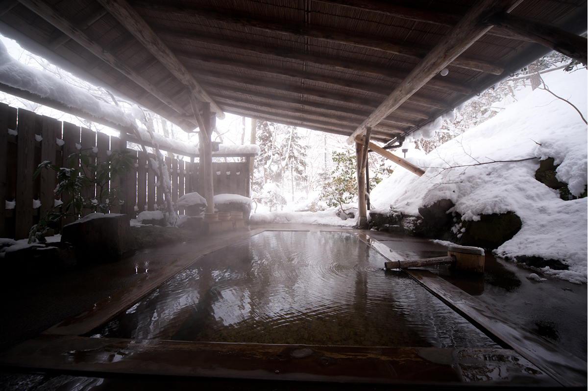
Онсэн по-настоящему раскрывается, если остаться хотя бы на две ночи. Тогда появляется целый свободный день без дорог и сборов, и купаться можно не спеша. В районе онсэнов Наруко в префектуре Мияги есть два рёкана, куда едут именно за этим.
Идея
Зачем оставаться на несколько ночей
Японская специалистка по онсэнам и красоте, которая выбирала эти места, убеждена: на водах нужно задерживаться. Если не надо никуда переезжать, у путешественника появляется «свободный целый день». Тело и голова отдыхают, а сама поездка начинает выглядеть иначе: в ней находится время и для прогулки, и для мастерской по соседству, и для ещё одного купания.
Для такого отдыха в Японии давно есть слово «тодзи», лечение на водах, когда люди неделями живут при источнике. Оба рёкана из этой статьи стоят в городе Осаки, в районе онсэнов Наруко, но предлагают тодзи по-разному: один как тихую деревенскую жизнь, другой как жизнь, где можно и лечиться, и работать.
Каватаби
«Ямафутокоро-но ядо Мияма»: дом среди сатояма
Рёкан «Ямафутокоро-но ядо Мияма» стоит в онсэне Каватаби, среди сатояма, деревенских холмов с полями и рощами. В главном здании есть комнаты для тодзи, а в отдельном корпусе в день принимают только две или три группы гостей.
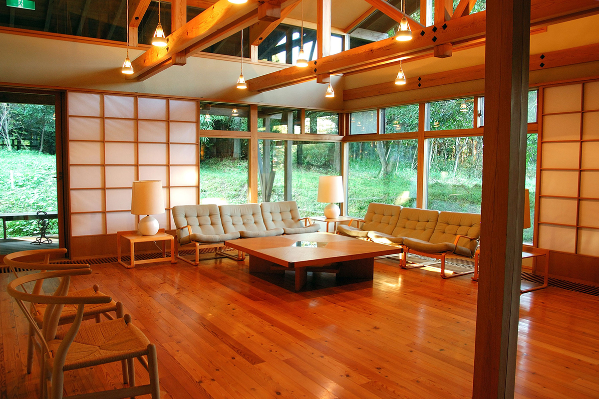
Сюда хочется вернуться, и сразу не скажешь почему. Может быть, дело в тёплой, почти прохладной воде, в которой начинаешь дремать. Или в лаунже из кедра, залитом светом сквозь листву, или в футоне на татами, где спишь до утра без пробуждений. А может быть, всё решил ужин: пышные лепёшки «дайкон-моти» в сладко-солёном соусе, которые хочется попробовать ещё раз. Это из тех мест, о которых вспоминаешь с улыбкой.
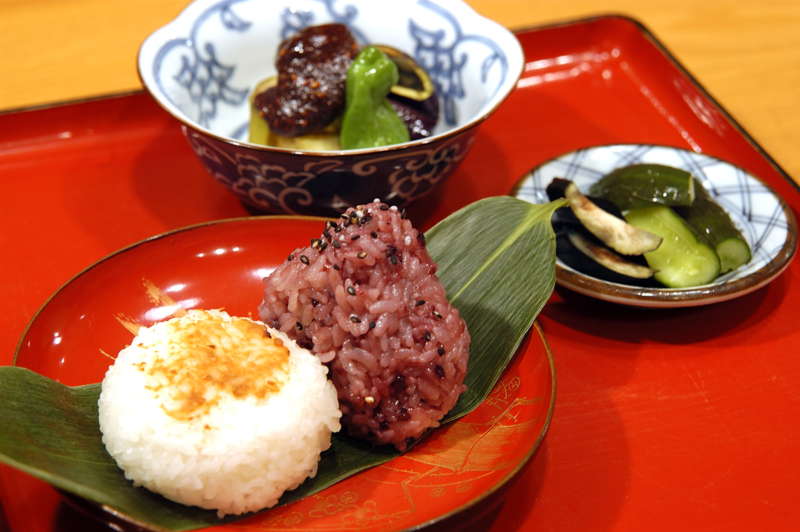
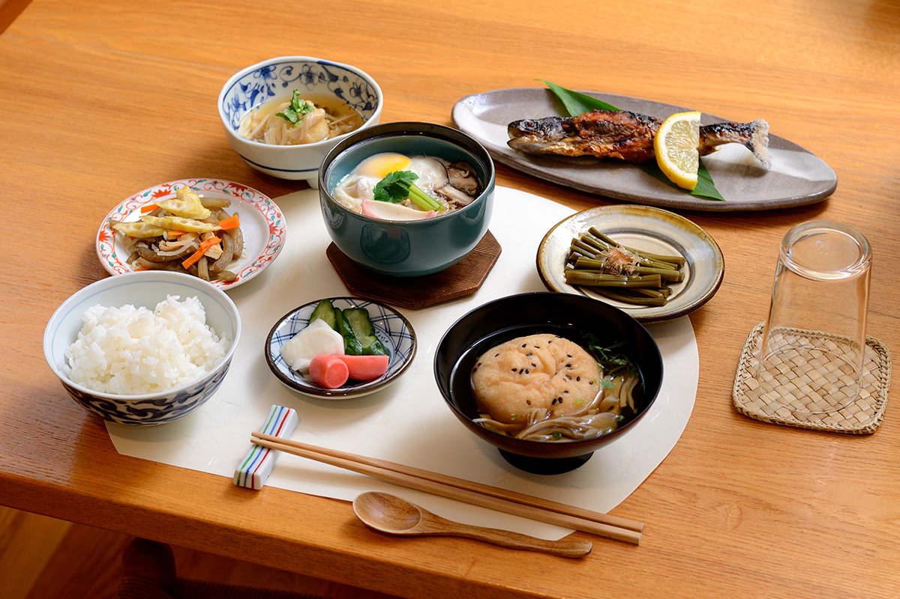
Собственный источник рёкана тёплый, 38,2 °C. Прозрачная вода цвета обжаренного чая «ходзитя» пахнет листвой, и в купальне кажется, что сидишь в лесу. За рёканом через кедровую рощу ведёт тропа к древнему кургану. Однажды, пока автор смотрела в окно лаунжа, соседи прямо рядом собирали каштаны.
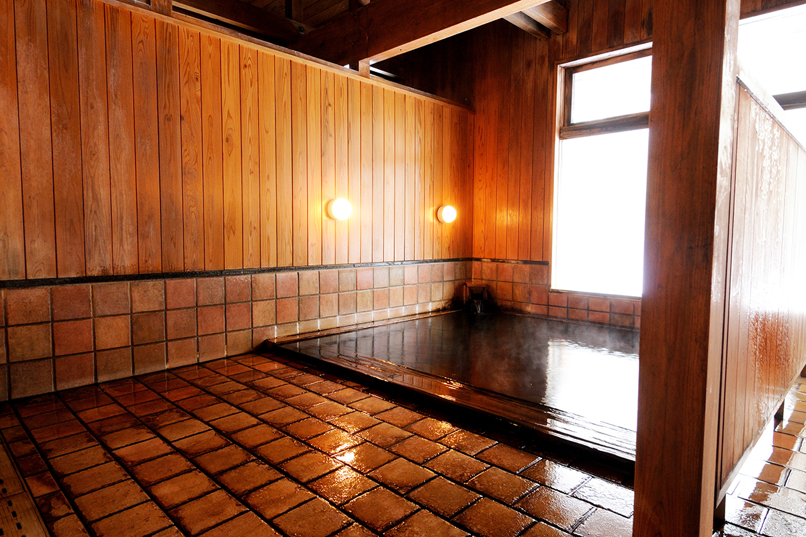
Если остаться на несколько ночей, стоит пройтись по тропинкам между полями. В лаковой мастерской «Ран» можно выбрать посуду на каждый день, в общественной купальне искупаться вместе с местными, и вот уже чувствуешь себя жителем деревни.
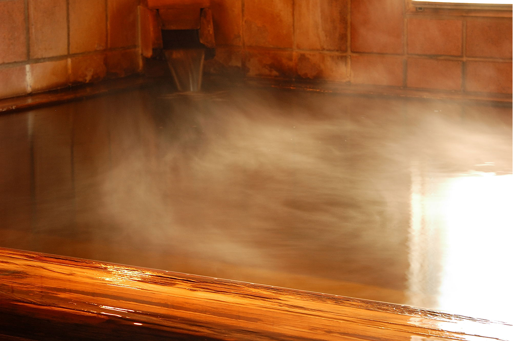
На территории стоит старый жилой дом под соломенной крышей, внесённый в реестр материальных культурных ценностей. В нём живёт семья хозяев, которая занимается сельским хозяйством, а рядом стоят главное здание с комнатами для тодзи и отдельный корпус. Если ехать на две или три ночи, автор советует отдельный корпус.
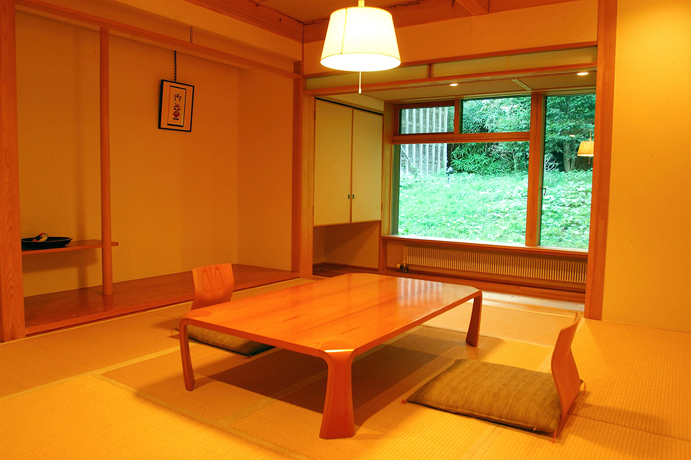
«Ямафутокоро-но ядо Мияма»
- Адрес
- префектура Мияги, Осаки, Наруко-онсэн, Ёгай, 91
- Телефон
- +81 229-84-7641
- Цены / Вход
- главное здание от 10 230 иен, отдельный корпус от 19 250 иен за ночь с ужином и завтраком (с налогом и сервисом, без налога на купание)
- Заезд / выезд
- 15:00 / 11:00
Вода: простой источник, слабощелочной, около 38,2 °C, течёт без повторного использования. Кухни и прачечной для гостей нет, Wi-Fi есть, гостей встречают на машине.
Хигаси-Наруко
Ryokan Ohnuma: тодзи по-современному
Ryokan Ohnuma в онсэне Хигаси-Наруко называют родоначальником современного тодзи. Рёкан не раз перестраивали, а в 2023 году он изменился снова: все комнаты в деревянном главном здании переделали и отделали местным деревом, по всему рёкану провели быстрый Wi-Fi, а комнат со столом и стулом стало больше. Жить здесь неделю и при этом работать стало ещё удобнее.
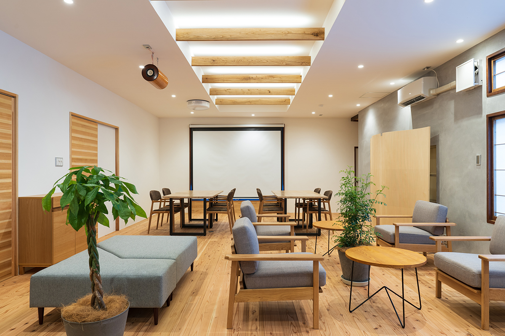
Больше всего удивляет комната «401» на верхнем этаже корпуса для тодзи. Других номеров на этаже нет, поэтому умывальник и туалет в коридоре и две отдельные купальни достаются как будто только своим гостям. Получается пентхаус для тодзи, из которого не хочется выходить.
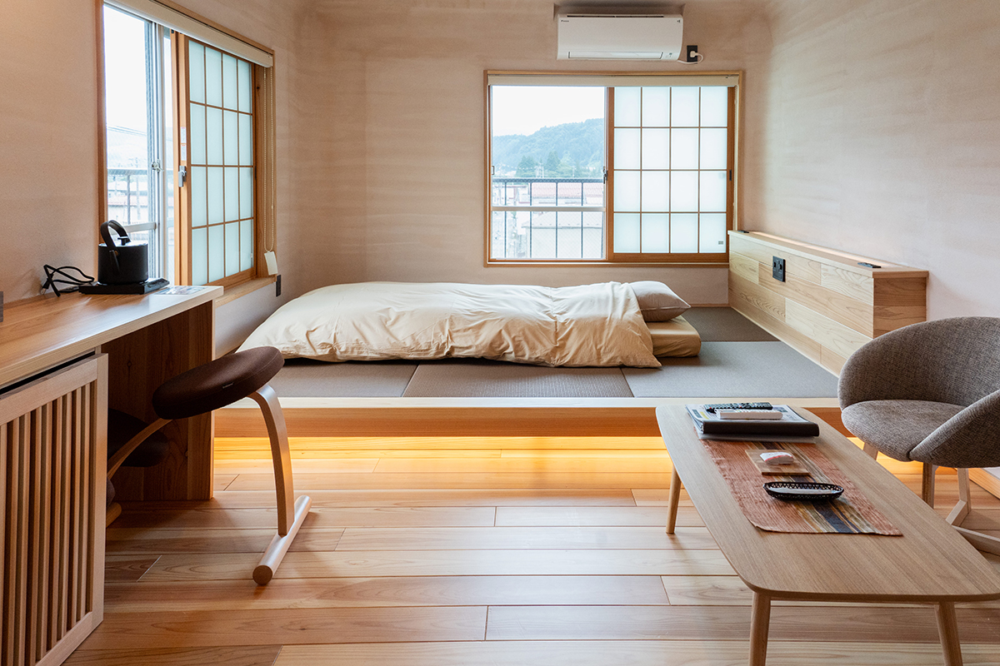
Синдзи Онума, хранитель источника в пятом поколении, говорит о современном тодзи больше 20 лет. Начинается оно, по его словам, с двух ночей: одной мало, чтобы привести в порядок тело и голову. Средний день между ночами он называет «белым временем» и считает его самым важным. Если снова и снова заходить в воду и выключить голову, тело погружается в отдых, и вторая ночь даёт сон глубже и лучше, чем первая. Рёкан даже проводит опыты, чтобы это проверить.
Здесь можно жить и как в рёкане, и как в старом курорте для тодзи. Есть меню от лёгкого здорового до праздничного, а есть кухня для гостей, где хватает посуды и техники. Можно жить без питания и готовить самому, можно купить готовые блюда на улицах Наруко и заказать к ним только рис и мисо-суп. Рядом есть супермаркет и продуктовые лавки, а в двух остановках по линии JR Рикуто стоит популярная придорожная станция «митиноэки». Утром и вечером можно есть в рёкане, а днём готовить самому из овощей с этой станции, и так прожить здесь сколько угодно дней.
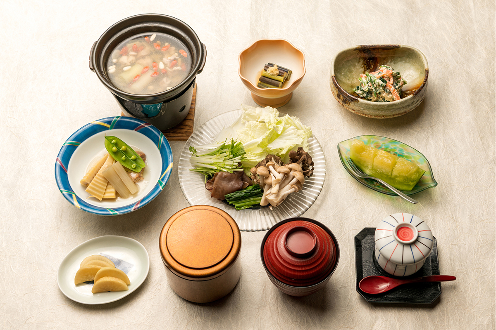
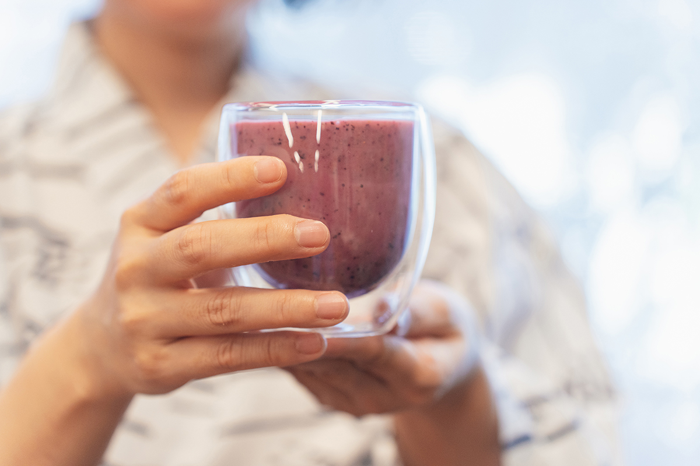
У входа висит табличка «знаменитая вода для женщин». Собственный источник, который здесь зовут «акаю», красной водой, относится к натриево-гидрокарбонатным и богат содой. Вода цвета чёрного чая содержит органические вещества растительного происхождения и пахнет деревом. Она снимает старые клетки кожи, а растительные вещества её увлажняют, так что кожа становится гладкой и блестящей. Второй источник, натриево-гидрокарбонатный и хлоридный, прогревает до самых костей. В нём купаются в большой купальне «Якуси сэннин-буро» и в отдельной открытой купальне в саду.
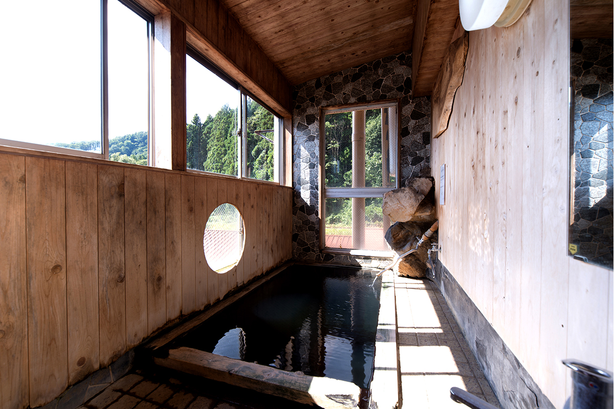
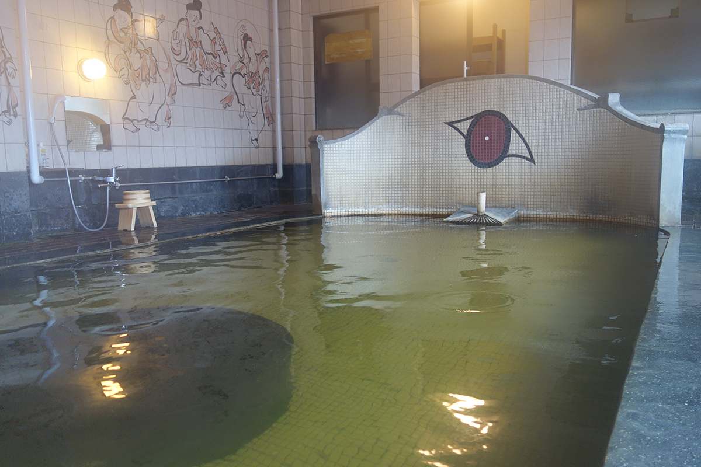
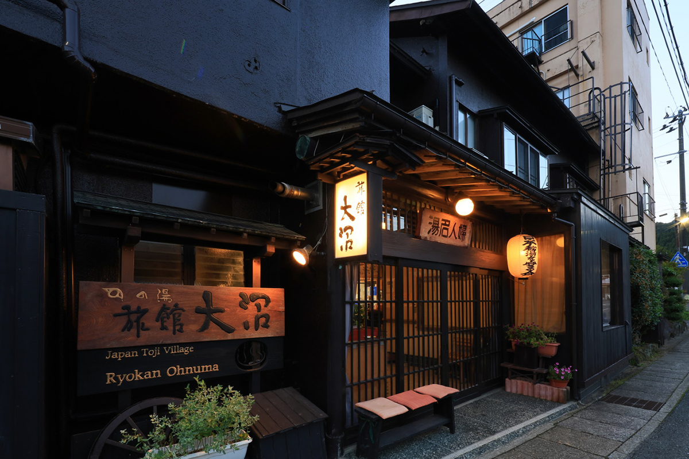
Ryokan Ohnuma
- Адрес
- префектура Мияги, Осаки, Наруко-онсэн, Акаю, 34
- Телефон
- +81 229-83-3052
- Цены / Вход
- от 17 600 иен за ночь с ужином и завтраком (с налогом и сервисом), в номере главного здания с туалетом
- Заезд / выезд
- 15:00 / 11:00
- Сайт
- ohnuma.co.jp
Вода: натриево-гидрокарбонатный источник около 64,9 °C и натриево-гидрокарбонатный хлоридный около 66,4 °C, течёт без повторного использования. Есть кухня, прачечная и Wi-Fi, гостей на машине не встречают.